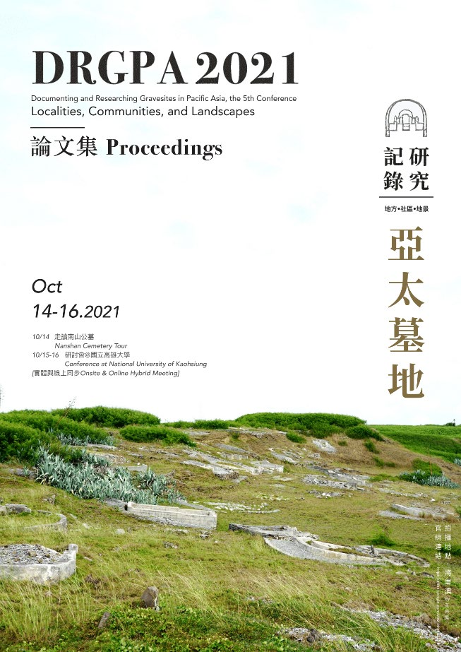

Since 2015 the researchers of APLAC/Thakbong have been organizing with different partner organizations a bi-annual conference on the topic of burial practices. The conferences, initially focusing on burial practices in Taiwan, triggered fruitful exchanges with researchers and organizations working on similar topics in East and South-East Asia. To be more inclusive and welcoming, the conference has been renamed in 2019 from DRGT2011, DRGT2015, DRGT2017 (Documenting and Researching Gravesites in Taiwan) to DRGPA2019, DRGPA2021 and DRGPA2023.
In 2024, APLAC hosted for a first time the 133th International Winter Symposium on Korean Literature and Korean-Asian Culture organized by the Korean Literature Society and the Asian Culture Research Institute at Yongin University